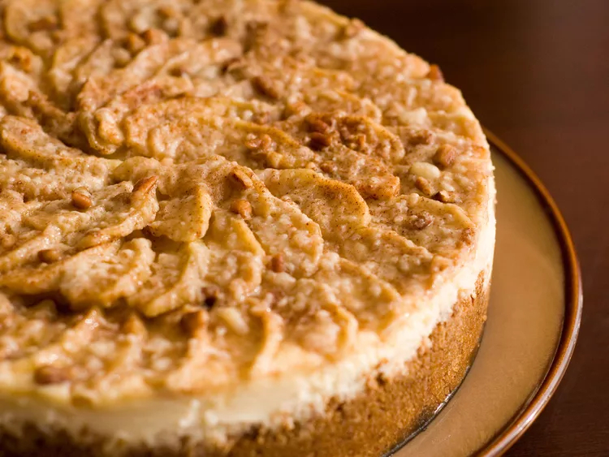

This is a delicious apple cheesecake that I usually make in the fall.
Crust:
- 1 cup graham cracker crumbs
- ½ cup finely chopped pecans
- ¼ cup unsalted butter, melted
- 3 tablespoons white sugar
- ½ teaspoon ground cinnamon
Filling:
- 2 (8 ounce) packages cream cheese, softened
- ½ cup white sugar
- 2 large eggs
- ½ teaspoon vanilla extract
Topping:
- 4 cups apples - peeled, cored and thinly sliced
- ⅓ cup white sugar
- ½ teaspoon ground cinnamon
- ¼ cup chopped pecans
- Preheat the oven to 350 degrees F (175 degrees C).
- Make the crust: Mix graham cracker crumbs, pecans, melted butter, sugar, and cinnamon together in a bowl
until well combined. Press into the bottom of a 9-inch springform pan.
- Bake in the preheated oven for 10 minutes. Remove from the oven; leave the oven on.
- Make the filling: Beat cream cheese and sugar in a mixing bowl with an electric mixer on medium speed until
smooth. Add eggs, one at a time, beating well after each addition. Beat in vanilla extract. Pour filling
into the baked crust.
- Make the topping: Place apples in a bowl.
- Stir sugar and cinnamon together in a smaller bowl; pour over apples and toss to coat. Spoon sugared apples
over filling, then sprinkle pecans over top.
- Bake in the oven until edges are puffed, 60 to 70 minutes. Run the tip of a table knife around the edges of
the pan, set the pan on a wire rack, and allow the cheesecake to cool at room temperature, about 1 hour.
Refrigerate until completely chilled, 4 hours to overnight.